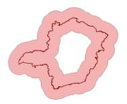
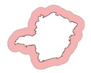
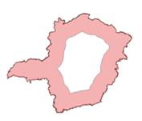

to select the output directory
and also inform the new layer name to store the result, or
to select the output directory
and also inform the new layer name to store the result, or to select the Data Source
and
to select the Data Source
and- Inform the new Layer Name to store the aggregation result.
The Buffer spatial operation generates buffer zones (or zones of influence) around the geometry of objects of a layer, considering a predefined distance. The figure bellow shows examples of buffer zones around a river or an municipality.
If the geometry of the objects are polygons it is possible to ask for internal and/or external buffers, as showed bellow.



Inside and outside buffer
Only outside buffer
Only inside buffer
It is possible to ask for several levels of buffers. Selecting a distance d and n levels will result in n buffers each at a distance d*(n-1). The next figure shows an example of buffers at multiple levels.
As the buffers around different objects might overlap, it is possible to request the dissolving of the boundaries inside the overlapping areas. This is illustrated in the next figure.
It is accessed through:
Plugins
> Vector Processing > Buffer...
to select the output directory
and also inform the new layer name to store the result, or to select the Data Source
andThe buffer result can be stored in different TerraLib data sources. Check data source selector for more details on how to select a data source.
The option to use buffer distance for each object based on one of its attributes is under development.